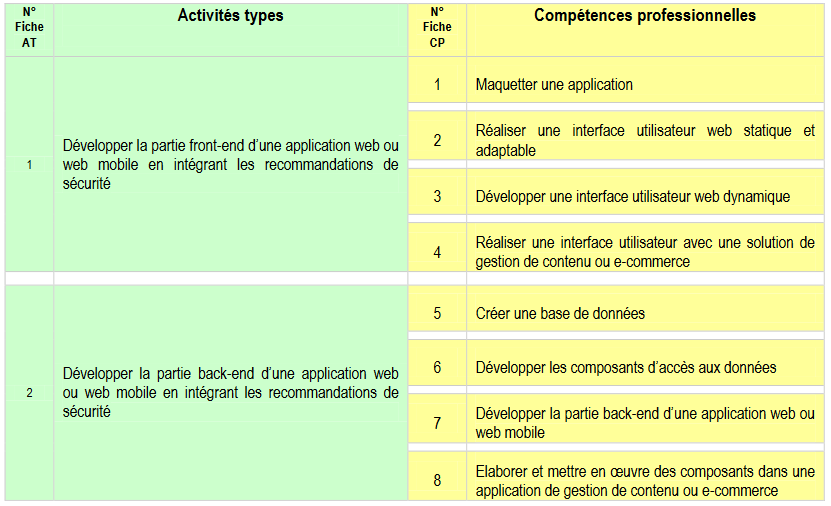

Titre Professionnel
Développeur web et web mobile

Présentation de la formation
Le développeur web et web mobile développe ou fait évoluer des applications orientées web, ou web mobile ou les deux à la fois, en respectant les normes et standards reconnus par la profession et en suivant l’état de l’art de la sécurité informatique à toutes les étapes. Ces applications sont destinées à des internautes ou des salariés d’entreprise.Le développeur conçoit la partie visuelle de l’application exécutée sur le navigateur côté ordinateur client. Il ébauche la maquette des écrans de l’interface utilisateur et prévoit la navigation de l’application web ou web mobile. Il code l’ensemble avec les langages de programmation web adaptés et une architecture applicative conforme aux bonnes pratiques du développement web et webmobile. Il réalise la partie visuelle de l’application dans un premier temps de manière statique et en la rendant adaptable au contexte puis dans un deuxième temps capable d’interagir avec l’utilisateur de manière dynamique.En fonction des besoins de l'utilisateur, il peut installer et adapter une solution préétablie de gestion de contenu ou d’e-commerce.Il respecte les principes de sécurisation des interfaces utilisateur et prend en compte la charte graphique, ou les interfaces utilisateur standardisées, ainsi que les règles d'accessibilité.À la suite ou en parallèle au développement de la partie visuelle, le développeur conçoit et code la partie back-end, c’est-à-dire exécutée côté serveur pour accéder aux données. Le développeur crée la base de données et développe les composants d’accès aux données pour pouvoir les afficher et les mettre à jour dans l’application web ou web mobile.Si le choix a été fait de mettre en œuvre une solution de gestion de contenu ou d’e-commerce, il développe des modules complémentaires pour adapter la solution choisie et installée au préalable.Il s'adapte en continu aux évolutions technologiques du secteur du développement web et web mobile. Pour assurer cette veille, l'usage de la langue anglaise est souvent requis pour la lecture et la compréhension de documentations techniques ainsi que pour assurer des échanges techniques au moyen de textes courts avec des développeurs distants pouvant être de nationalités différentes.Il peut travailler éventuellement à distance en tant que salarié d’une entreprise, ou pour un client de la société de services qui l'emploie, ou en tant qu’indépendant directement pour un client. Ses activités diffèrent selon la taille de l’entreprise. En PME, il peut mener seul le développement d’un projet. Dans une grande structure, il travaille soit au sein d'une équipe hiérarchisée sous la responsabilité d'un chef de projet, soit en équipe pluridisciplinaire. Il applique les normes de qualité logicielle de son entreprise ou de son prestataire de services. Il applique les recommandations de sécurité émises par l’Agence Nationale de la Sécurité des Systèmes d’Information (ANSSI).Les environnements de développement et de test sont prédéfinis par un Lead Developer ou un chef de projet.Il participe aux réunions de projet et aux ateliers de présentations utilisateurs.Dans le cadre d’un développement en approche de type Agile, il échange avec l’utilisateur ou un responsable de maîtrise d’ouvrage. Il est encadré éventuellement par un développeur plus expérimenté (leaddeveloper).Dans le cadre d’un développement en approche classique, il n’a pas d’échange direct avec l’utilisateur et il est encadré par un chef de projet.Le développeur travaille en équipe. Il utilise notamment des outils de gestion de version et des outils collaboratifs. Selon le contexte, il collabore avec d’autres développeurs, un ergonome, un web designer, un architecte logiciel, un testeur et avec le responsable de la sécurité des systèmes d’information (RSSI) de son entreprise, de son client ou de son hébergeur.Assurant sa mission dans des entreprises et des contextes professionnels divers, il est mobile géographiquement et s'adapte aux nouveaux environnements de travai
Compétences à valider
Activité type 1 : Développer la partie Front-End
À partir d’un cahier des charges, des spécifications détaillées ou d'une demande exprimée par un utilisateur, le développeur réalise la partie front-end, c’est-à-dire l’interface utilisateur, d’une application web ou web mobile. Il conçoit et code ce qui est exécuté par un navigateur situé sur un poste client. Dans toutes les étapes du développement, il suit les recommandations de la sécurité informatique émises par l’ANSSI.
Activité type 2 : Développer la partie Back-End
Àpartir d’un cahier des charges, des spécifications détaillées ou d'une demande exprimée par un utilisateur, le développeur réalise la partie back-end, c’est à dire les traitements côté serveur d’une application web ou web mobile. Il conçoit et code les traitements exécutés sur un serveur et provoqués par les demandes d’extraction ou de mise à jour effectuées dans la partie front-end.Dans toutes les étapes du développement, il suit les recommandations de la sécurité informatique émises par l’ANSSI.
Contact
GRETA Grand Hainaut
rue Charles Bourseul
59500 Douai
03.27.08.70.06